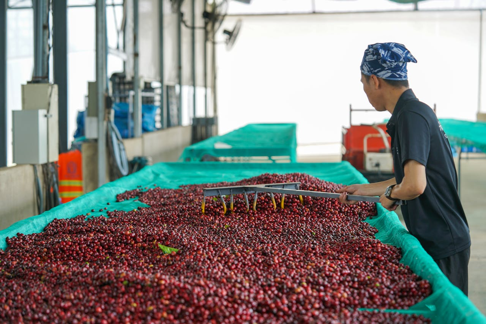

Sabor con Propóposito
De residuo a Recurso: El verdadero sabor de las sostenibilidad Antioqueña

La transformación de la cáscara de café no es sólo una innovación culinaria, es un acto de responsabilidad ambiental. Al aprovechar este subproducto, reducimos agresivamente los desechos orgánicos que históricamente han representado un desafío ecológico para las fuentes hídricas de la región. Cada tarro de Mermelada Exótica de Cáscara de Café es un voto por la Economía Circular, generando una nueva línea de ingresos para nuestros caficultores y cerrando el ciclo de vida del fruto de manera virtuosa y limpia.
Economía Circular ♻
Transformamos un pasivo ambiental en un recurso económico valioso para la Región
Reducción de residuos🌱
Aprovechamos subproductos para disminuir el impacto en fuentes Hídricas de Antioquia
Apoyo a productores 👨👩👧👦
generamos ingreros adicionales para pequeños y medianos caficultores locales